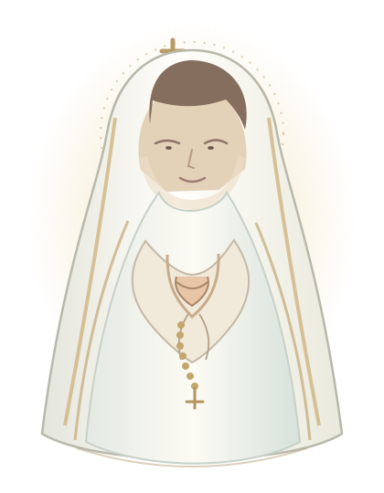

Luz e
Prece
Um instante de paz.
Um espaço para encontrar serenidade, agradecer, pedir e confiar. Reze o terço sob o manto de Nossa Senhora, onde estiver e quando precisar.

Todos os horários exibidos são de Brasília (UTC−3). Reze de onde estiver.
Chegue como estiver. Aqui há espaço para sua fé, seus agradecimentos, suas preocupações e sua esperança.
Sua oração chega sempre na hora certa. Cada pessoa começa do início, no próprio ritmo.
Sem cadastro para rezar, sem exposição de identidade. Um momento de fé, cuidado e acolhimento.
Um momento seu,
em oração.
Reze o terço quando desejar, começando pelo Sinal da Cruz no momento em que entrar. O terço completo leva cerca de 22 minutos no ritmo padrão: um tempo para respirar, se recompor e reacender a esperança.
A oração começa aqui
O terço está sempre disponível. Comece pelo Sinal da Cruz, no seu tempo, sem perder nenhuma oração.
Terço completo: cerca de 22 minutos no ritmo padrão.
Cinco mistérios.
Cinco intenções.
Cinco intenções para acompanhar sua oração com serenidade e carinho.
Estamos cuidando da segurança das velas coletivas. O terço e todas as orações continuam disponíveis normalmente. Obrigado por rezar conosco!
Uma luz acesa,
uma prece elevada.
Acenda uma vela simbólica e confie sua intenção à oração. Cada chama permanece visível por uma hora.
Cada vela permanece visível por 1 hora. Novas chamas entram continuamente no altar.
Acenda sua vela
Um gesto simbólico de fé e afeto, sem exposição do seu nome.
Antes de acender sua vela, confirme esta verificação de segurança. Sua oração não será interrompida.
“Onde dois ou três estiverem reunidos
em meu nome, eu estou ali, no meio deles.”
Mateus 18,20
Voltar ao início ↑